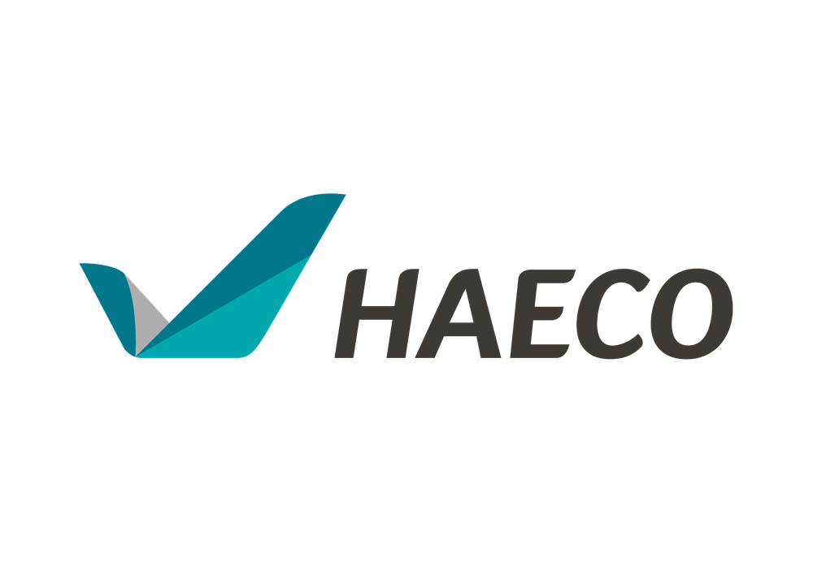

 HAECO Co-op Experience
Technology Innovation | Transformation & Technology Department
September 2025 - January 2026 | 5 Months
An intensive 5-month journey working on AI-driven and data-driven solutions for operations optimization and digital transformation at Hong Kong Aircraft Engineering Company Limited (HAECO).
🌟 Key Highlights
AWS AI Hackathon Champion
Grand Prize Winner among 130+ teams. Developed HAECO Bay Management System within 14 days.
Techathon Lead Organizer
Solely planned and organized HAECO's first Techathon, building a framework for future innovation programs.
Lean Day MC
Master of Ceremony at HAECO Lean Day 2025, engaging executives in the Annual Kaizen showcase.
4 Media Interviews
Featured in unwire.hk, SCMP, HAECO, and AWS HK interviews after winning the championship.
AWS re:Invent
Attended AWS re:Invent conference in Las Vegas, representing HAECO and sharing our innovation.
75th Anniversary Helper
Contributed to HAECO's 75th Birthday Celebration, supporting the milestone event.
📅 5-Month Journey Timeline
📍 September 2025 - Getting Started
Month 1Week 1-2 (Sep 1-12)
LMS Guidelines & Orientation (Transformation & Technology)
Completed Learning Management System orientation and consolidated key guidelines to support structured onboarding and knowledge alignment.
AWS AI Hackathon Preparation
Conducted focused preparation for the AWS AI Hackathon Hong Kong 2025, aligning problem understanding, solution approach, and team readiness.
Week 3-4 (Sep 15-30)
HAECO Bay Management System (AWS AI Hackathon 2025)
Delivered an AI-driven aircraft bay scheduling solution within a 14-day hackathon timeline.
- Defined system requirements and solution design
- Developed a web-based prototype
- Implemented rule-based AI optimization
- Prepared demo and executive walkthrough
Techathon Brainstorming with TI Manager
Defined the strategic direction for HAECO’s first Techathon, establishing a 4-year roadmap centered on technology adoption, lean execution, and stakeholder alignment.
📍 October 2025 - Framework Design
Month 2Week 1-2 (Oct 1-17)
AWS AI Hackathon 2025 – Grand Prize
Awarded Grand Prize Champion, officially announced by AWS through an online presentation.
Techathon 4-Year Strategic Framework (2026–2029)
Defined a comprehensive 4-year Techathon roadmap, outlining strategic objectives, key milestones, and high-level resource planning to support long-term program sustainability.
Lean Day Communication Materials
Developed visual communication materials to support promotion and audience engagement for HAECO Lean Day 2025.
Week 3-4 (Oct 20-31)
Techathon Framework Pitch to Transformation & Technology GM (1)
Executive pitch proposing a 4-year Techathon framework to Transformation & Technology leadership.
- Articulated long-term vision with near-term execution milestones
- Proposed participation and engagement model
- Positioned a feasible plan aligned with available resources
Techathon Framework Strategic Redirection
Redirected the Techathon framework into a 2–3 year roadmap, aligning ambition with execution feasibility following executive review.
Lean Day MC & AWS AI Hackathon Sharing Preparation
Prepared for a dedicated speaking slot at Lean Day, serving as Master of Ceremonies while developing sharing content on the AWS AI Hackathon Champion project for internal knowledge sharing and engagement.
📍 November 2025 - Interviews & Events
Month 3Week 1-2 (Nov 1-14)
AWS Champion Media Engagements
Represented HAECO as AWS AI Hackathon Champion in media and internal interviews, including SCMP, HAECO, and AWS Hong Kong.
HKUST Co-op Progress Review
Conducted mid-term progress alignment with HKUST Co-op coordinators, reviewing learning outcomes and internship contributions.
Techathon Framework Pitch to Transformation & Technology GM (2)
Follow-up executive pitch to refine and converge the Techathon framework for implementation readiness.
- Sharpened initiative scope to ensure clarity and focus
- Confirmed 2026 as the primary planning and execution horizon
Week 3-4 (Nov 17-28)
HAECO 75th Anniversary Helper - 21 November
Supported HAECO’s 75th Anniversary celebration, engaging with colleagues and leadership across the organization and expanding professional networks within the wider HAECO community.
Lean Day (MC & AWS Hackathon Sharing) – 26 November
Served as Master of Ceremonies at HAECO Lean Day 2025, delivering an AWS AI Hackathon Champion sharing session, and received an Outstanding Achievement Certification presented by the HAECO CEO, followed by direct engagement on future return opportunities.
Transformation & Technology Team Building – 28 November
Participated in Transformation & Technology team-building activities to strengthen internal networks, cross-team collaboration, and team cohesion, including informal engagement during the Christmas dinner.
Techathon Interest & Readiness Survey
Designed and distributed an internal questionnaire to assess employee interest and readiness, providing data-driven input for Techathon planning and prioritization.
Lean Day Techathon AI Teaser Video
Designed and produced an AI-generated teaser video to officially kick off the HAECO Hong Kong Techathon, showcased during Lean Day in front of senior management.
📍 December 2025 - Innovation & Exploration
Month 4Week 1-2 (Dec 1-12)
AWS re:Invent – Global Exposure
Represented HAECO at AWS re:Invent (Las Vegas), interviewed by AWS and unwire.hk on the Bay Management System, and expanded professional networks with engineers and technology leaders across Hong Kong, Taiwan, and Mainland China.
AI & Digital Team Teaser (Transformation & Technology)
Designed and produced an AI-generated teaser video introducing the AI & Digital team; following positive GM feedback at Lean Day, was invited to create an enhanced version for presentation at a management meeting.
Techathon 2026 Structure – Detailed Design
Developed the detailed implementation structure for the 2026 Techathon, translating executive direction from prior GM pitches into actionable planning ahead of final leadership alignment.
Techathon Framework Pitch to Transformation & Technology GM (3)
Final executive pitch to align governance, scope, and execution readiness for the Techathon framework.
- Maintained flexibility in participation scope and submission formats
- Aligned funding and incentives with practical feasibility
- Focused workshops on innovation experience over technical training
- Confirmed transparent shortlisting, panel structure, and realistic timelines
Week 3-4 (Dec 15-31)
Lean Day Summary Video (Internal Communications)
Supported the Lean Day organizing team in producing a summary video, highlighting key moments and achievements for publication on HiHAECO, the internal communication platform.
Techathon Timeline Realignment (H2 2026)
Realigned the Techathon schedule to the second half of 2026 following TI Manager guidance, balancing delivery readiness with team capacity changes after Co-op completion.
Technology Innovation Project Tracker
Designed and implemented a visual project tracking dashboard to support regular stand-up updates and cross-team alignment within the Technology Innovation team.
AR/VR/XR Glasses Exploration
Explored potential AR/VR/XR applications for HAECO operations, contributing early-stage innovation ideas for future TI team projects and Techathon experiential concepts.
📍 January 2026 - Completion & Handover
Month 5Techathon Handover Package (2026)
Delivered a comprehensive Techathon handover package to ensure continuity, knowledge transfer, and execution readiness following Co-op completion.
- Techathon posters and roadmap visuals
- Techathon rules and briefing materials (English & Chinese)
- Registration form and submission templates
- End-to-end Techathon handover guideline
Successfully completed a 5-month Co-op internship, delivering high-impact contributions across innovation delivery, strategic planning, and knowledge transfer within HAECO.
📸 Photos & Videos
Visual highlights from my 5-month journey at HAECO
💡 Key Learnings & Takeaways
🤖 Technology & AI Innovation
- Applied AI-driven optimization to real operational challenges
- Leveraged AWS Q Developer and Kiro to accelerate prototyping and solution design
- Evaluated AR/VR technologies as potential enablers for aviation operations
📊 Strategy & Program Management
- Planned and structured multi-year innovation roadmaps
- Engaged senior management through structured executive pitches
- Translated stakeholder input into feasible and executable plans
🎤 Leadership & Executive Communication
- Led and facilitated large-scale corporate events as Master of Ceremonies
- Communicated complex ideas to executives and cross-functional audiences
- Represented the organization in media and industry interviews
🚀 Innovation Enablement & Entrepreneurship
- Designed frameworks to enable internal innovation programs
- Structured funding, mentorship, and participation models
- Contributed to building a sustainable innovation pipeline within HAECO